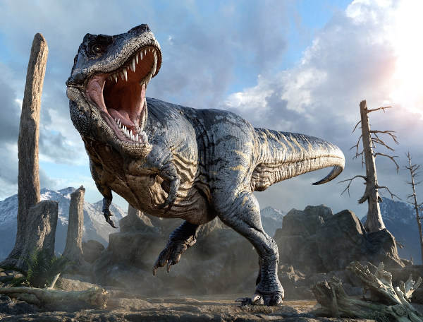

Os dinossauros foram um grupo de répteis que viveu durante a Era Mesozoica. Eles apresentavam enorme diversidade de tamanhos, alimentação e formas de locomoção.
O termo Ma é utilizado em estudos geológicos para representar milhões de anos antes do presente.
Este projeto destaca como a paleontologia utiliza fósseis para estudar organismos e ambientes do passado.
